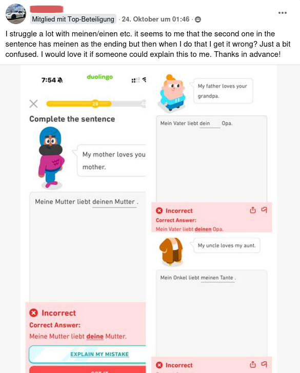
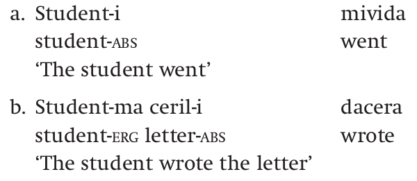
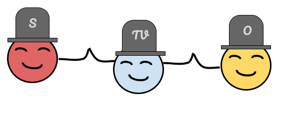
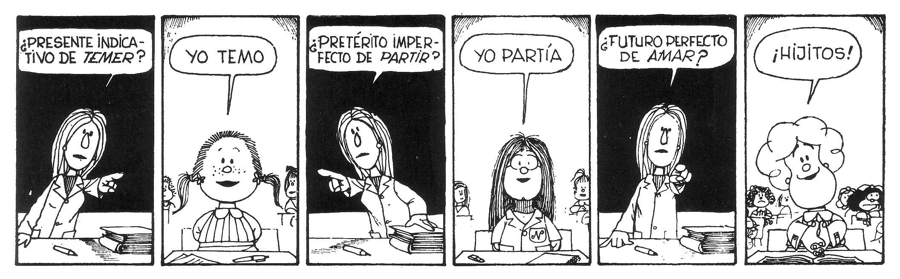
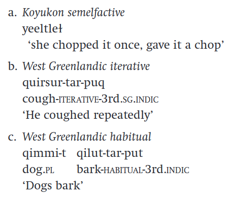
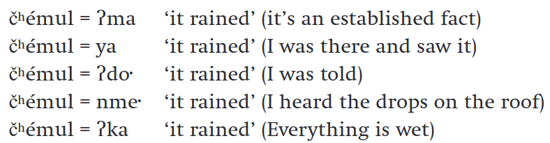

English Morphology
2024-11-12
Warning - Cuidado - Achtung
Affixation, internal stem change, reduplication, etc. may be found not only in derivational morphology, but also in inflectional morphology, except for subtractive processes and compounding. In other words, form and function are different things.

| Singular | Plural |
|---|---|
| Cat | cats |
| Dog | dogs |
| Church | churches |
| Ox | oxen |
| Child | children |
| Gloss | Singular | Dual | Plural |
|---|---|---|---|
| ‘ḱayak’ | qayaq | qayak | qayat |
| ‘beaver’ | paluqtaq | paluqtak | paluqtat |
| Sing. | Plural | |
|---|---|---|
| 1st | sage | sagen |
| 2nd | sagst | sagt |
| 3rd | sagt | sagen |
| Sing. | 1st | k-hnia’sà:ke | ‘my throat’ |
| 2nd | s-hnia’sà:ke | ‘your throat’ | |
| 3rd | ie-hnia’sà:ke | ‘his throat’ | |
| ra-hnia’sà:ke | ‘her throat’ | ||
| Plural | 1st | iakwa-hnia’sà:ke | ‘our throat’ |
| 2nd | sewa-hnia’sà:ke | ‘your pl. throat’ | |
| 3rd | konti-hnia’sà:ke | ‘their M. throat’ | |
| rati-hnia’sà:ke | ‘their F. throat’ |
| Inclusive | Exclusive | |
|---|---|---|
| 1st plural | tewa-hià:tons ‘we all (you pl. and I) are writing’ | iakwa-hià:tons ‘we all (they and I) are writing’ |
| Dual | teni-hià:tons ‘we two (you and I) are writing’ | iakeni-hià:tons ‘we two (s/he and I) are writing’ |
| Masc | Fem | Neuter | ||||
|---|---|---|---|---|---|---|
| French | l’homme | ‘the man’ | la femme | ‘the woman’ | – | |
| le rat | ‘the rat’ | la souris | ‘the mouse’ | – | ||
| le bureau | ‘the desk’ | la table | ‘the table’ | – | ||
| German | der Mann | ‘the man’ | die Frau | ‘the woman’ | das Kind | ‘the child’ |
| der Tisch | ‘the table’ | die Mauer | ‘the wall’ | das Fenster | ‘the window’ | |
| der Hund | ‘the dog’ | die Maus | ‘the mouse’ | das Pferd | ‘the horse’ |
| Singular | Plural | |
|---|---|---|
| Nominative | rosa | rosae |
| Genitive | rosae | rosarum |
| Accusative | rosam | rosas |
| Dative | rosae | rosis |
| Ablative | rosa | rosis |
Ergative/absolutive systems
In this kind of system, the subject of a transitive verb gets a case called the ergative. The subject of an intransitive verb gets a case called the absolutive, which is also the case used for the direct object of a transitive verb.


| English | German | Spanish | |
|---|---|---|---|
| 1Sg Present | I love | Ich liebe | Yo amo |
| 1Sg Past | I loved | Ich liebte | Yo amé |
| 1Sg Future | I will love | Ich werde lieben | Yo amaré |


Aspect is not so straightforward
Most of the times tense and aspect are intertwined, so telling them apart is not that simple. For instance, the present tense in English can express both habitual and imperfective aspect: compare dogs bark (everey night at 3am) and a dog barks (now).

English Morphology | Week 4: Inflection I | Barrientos